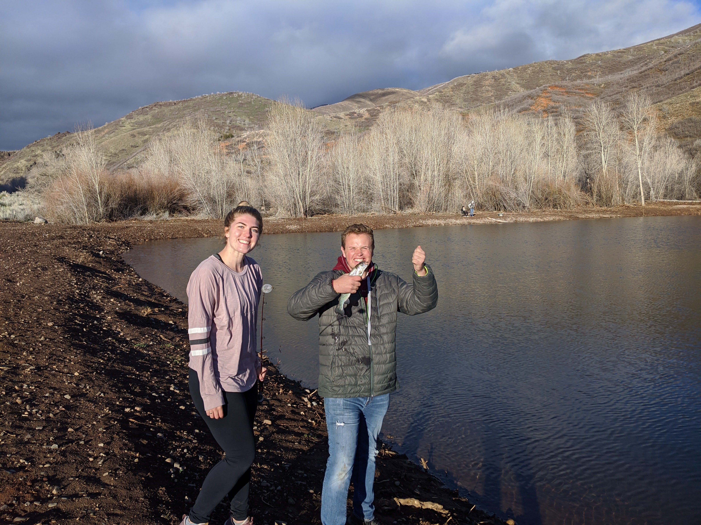

Intro
I created this page to show a little big about me and who I am outside of school. I am the oldest of four boys. I grew up in Nephi Utah and graduate from Juab High School in 2018. There is were I cultivated many friendships and where I dated what would then be my future wife Aubree. After graduation, I went on a misison for the Church Of Jesus Christ Of Latter-Day Saints. I was called to serve in the Peru Lima South Mission. On my mission I decided that I wanted to come to BYU. I got home in March of 2020 due to the ensuing pandemic. Shortly after I got home Aubree got back from her mission as well. I decided that was perfect timing and we were engaged before we could give out homecoming talks in church. We were married in August that year and life has been a non-stop adventure ever since.

Skateboarding
I have recently taken up a new hobbie. Every Wednesday night I go with a friend to the Provo Skate park by my house. Although I don't know how to do very many tricks It is something that helps provide relief from stress. Along with skateboarding I really love to buy skate socks. My favorite brand is Stance.
Travel
Fun fact about me: My wife and I both served missions in Peru! Although we served in different parts of the country, we still can laugh and reminisce about our experiences with the culture and the food. We have been saving up in hopes to return and visit both of our missions next year! I included a video of a town where I served from my mission below. Enjoy!
Fishing
Probably my all time favorite past time is fishing. I love to spend time outdoors. I love to go all types of fishing. I am working on catching all of the different species of fish that live in Utah. Here is a picture of my wife and I. I am holding a common rainbow trout.
